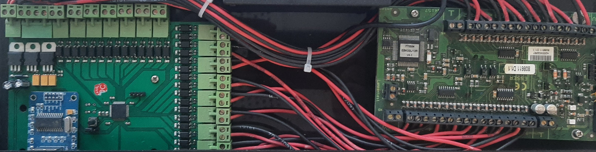
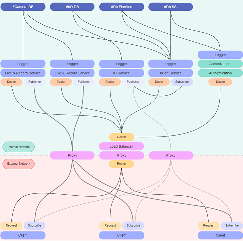
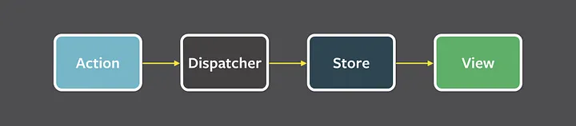
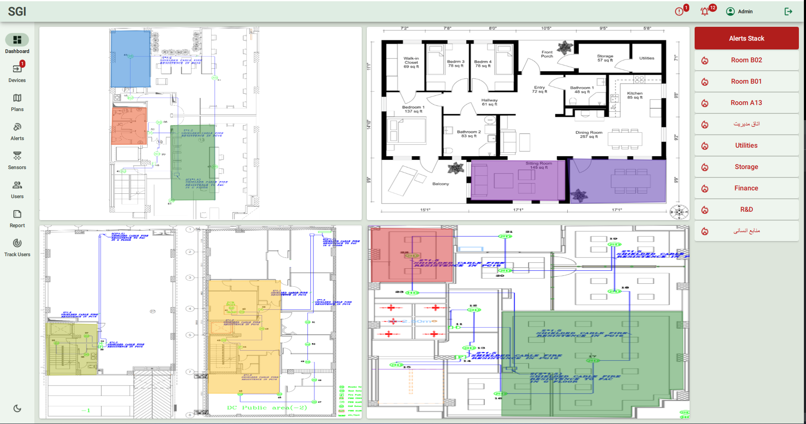
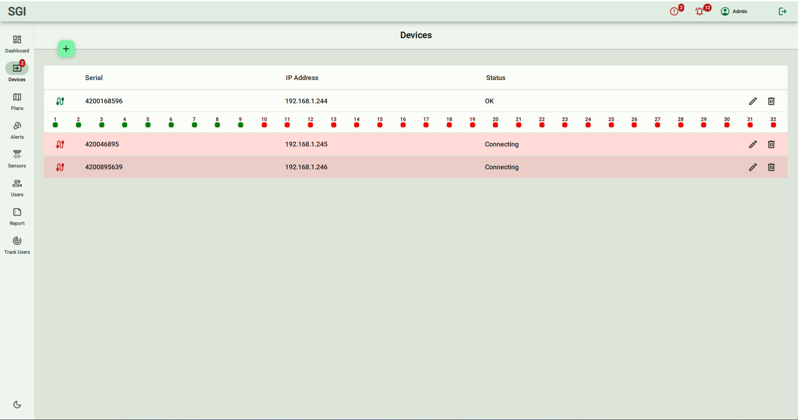

Reza is an Embedded Systems Software Engineer with over 7 years of experience in the
Automotive and Embedded Systems fields. He possesses proficiency in C/C++, Python,
Machine Vision, and Embedded Systems. Reza has gained substantial experience by actively
working in the automotive and IoT industries, making valuable contributions to diverse
projects. His expertise in Embedded Systems extends to various applications, including
machine vision and the development of function testers for End-of-Line testing of ECUs,
Infotainment systems, and other automotive components. Reza demonstrates a self-
motivated mindset, meticulous attention to detail, and a strong ability to work effectively both
independently and as part of a team. He is enthusiastic about sharing his best practices and
equally receptive to learning from others.
Projects
1. Integrated security systems
I am honored to present my project for SGI Company. This project consists of three key elements: the fire alert system, access control, and video management system. I have been given the opportunity to demonstrate my proficiency across three levels of programming, including embedded system, backend development, and front end. This comprehensive endeavor encompasses the following components:
Embedded System (ARM): For connecting to the panel, reading IO status, and sending data over TCP/IP, I skillfully utilized ARM STM32F103 microcontroller and FreeRTOS. This allowed me to establish reliable and efficient communication between the system and the network.

Backend Development:
To provide seamless services, I utilized Flask, Python, and MongoDB for backend development. This involved creating robust and efficient code to ensure smooth data handling and processing. In this project, we required four microservices: Auth, IOManagement, Cameras, and Storage. Choosing the most suitable architecture was crucial, and I opted to use ZeroMQ for designing the Service Oriented architecture.
To ensure secure communication between the client and microservices, I implemented tokenization. This added an extra layer of security to the system, safeguarding the data and enhancing the overall integrity of the application.
ZeroMQ played a vital role in establishing a well-structured and efficient communication pattern among the microservices. It facilitated reliable message passing and seamless integration between the different components. The architecture I designed for this project was as follows:

Designed SOA for FireAlert system
The backend code was designed to be easily understandable, making it easier for developers to maintain and modify the system in the future. The modular approach ensured flexibility and scalability, allowing for future enhancements and updates
Frontend Development: For the user interface, I utilized Qt QML and implemented material design components. I followed the Flux architecture pattern to develop the UI using QML. This approach ensured a structured and organized codebase, making it easier to manage the state and data flow within the application.
By leveraging Qt QML and applying the Flux structure, I was able to design an intuitive and visually appealing frontend that greatly enhanced the user experience. The material design components added a modern and consistent look to the UI, providing users with a familiar and pleasant interface.

Flux Structure

Dashboard Page

Devices Page
Throughout the project, I encountered numerous challenges, each serving as an opportunity for growth and problem-solving. I overcame these obstacles with determination and resourcefulness, delivering a high-quality outcome.
Let's Socialize